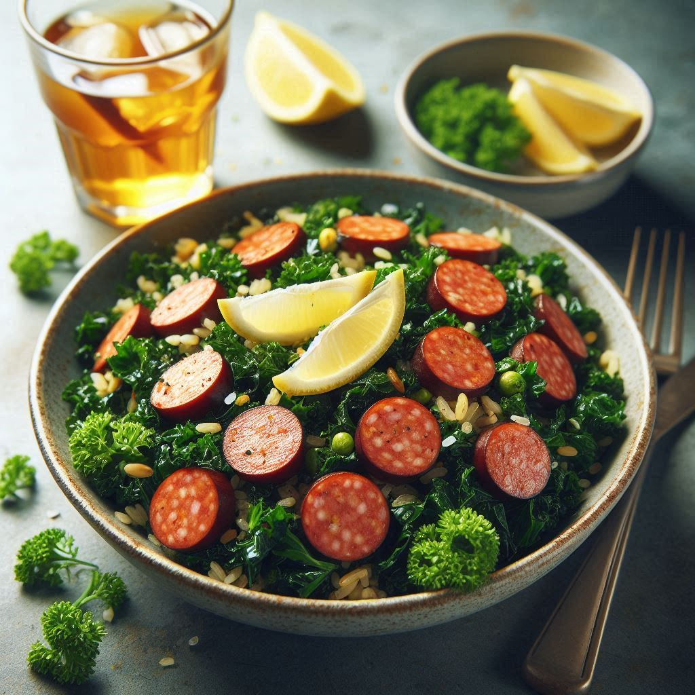

Kale Snausages
This hearty dish of superfoods and savory meat is quick to make in the instant pot
and great for meal prep.

Ingredients
- 2 lbs smoked sausage (andouille is fantastic, but any is fine)
- 2 cups uncooked rice (and water per machine instructions)
- 1 lb kale, chopped.
- lemon juice to taste
- minced garlic to taste
- 2 tbsp olive oil
- Sri-racha sauce (optional)
Directions
- Wash and add water to rice based on machine instructions.
- Chop the kale finely and set it aside in a metal bowl.
- Add olive oil, lemon juice, garlic, salt and pepper to taste to the bowl of kale. Mix ingredients and set aside.
- Slice the smoked sausage into ~1cm pieces
- Pre-heat a skillet and saute sausage until browned.
- When rice is nearly done, vent and open the instant pot, add kale mixture and restart on high pressure for 4 minutes.
- Allow 10 minutes of natural release before venting
- Mix rice and kale in instant pot, plate and top with smoked sausages.
- Top with sri-racha if desired
Back to recipes